WWDC 2023: What’s new in Xcode 15
Find hereafter a detailed summary of a video that belongs to a taxonomy of some WWDC footages.
The original video is available on the Apple official website (session 10165).
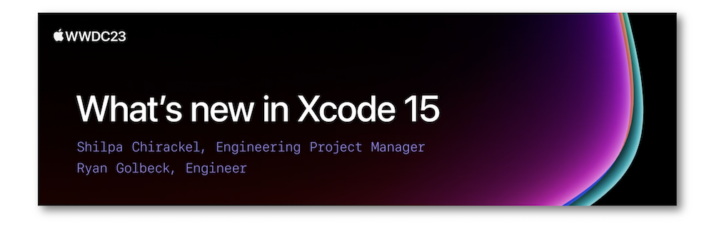
"Discover the latest productivity and performance improvements in Xcode 15. Explore enhancements to code completion and Xcode Previews, learn about the test navigator and test report, and find out more about the streamlined distribution process. We'll also highlight improved navigation, source control management, and debugging."
Hereafter, the underlined elements lead directly to the playback of the WWDC video at the appropriate moment.
It's now possible to download Xcode for all the platforms alltogether from the App Store.
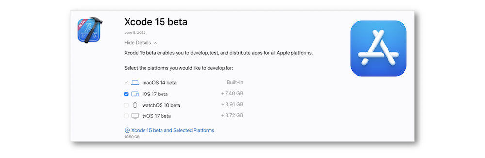
Editing #
Code completion #
The suggestions indicated by the Xcode completion are smarter and contain improvements in their presentation based on a better outreach of the context.
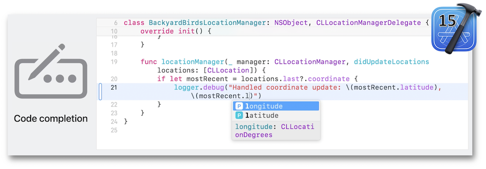
Asset catalogs #
Images and colors are described as symbols in the asset catalogs so as to ensure the safety type of the appropriate element.
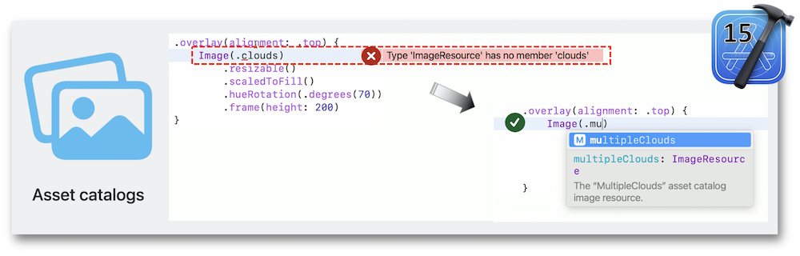
Localization #
Xcode 15 includes a single editor for regrouping all the translations at the same place for enhancing the previous localization process that was a little bit of challenging.
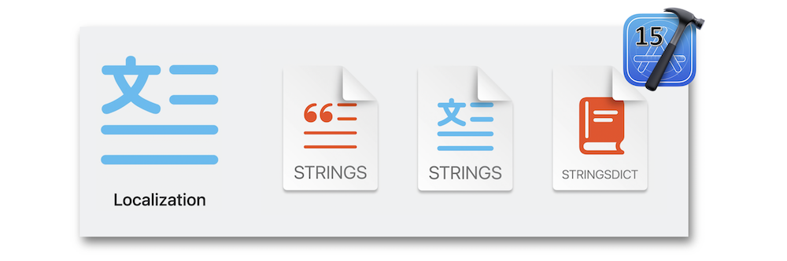
Documentation #
Besides its new styling, the Xcode documentation comes with a preview that displays a real-time rendering.
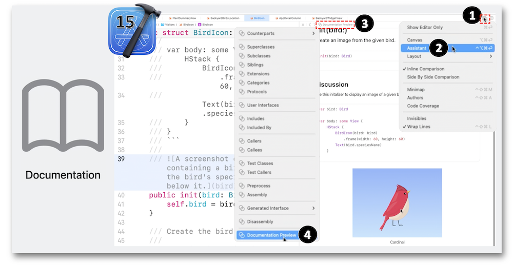
Swift macros #
This Swift new feature relies on annotations used for revising a boilerplate code into less cumbersome lines of code by encompassing generated code that can be easily exposed.
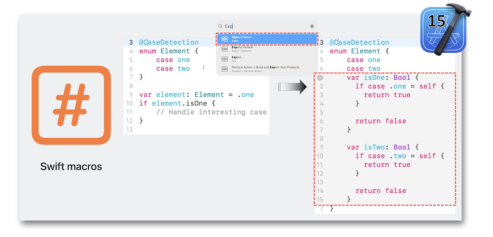
Macros aren't only native, they can be created according to the needs as well.
Previews #
Adding previews through the Swift macros leads to dedicated displays for both UIKit and SwiftUI while providing a brand new widget transitions animation.
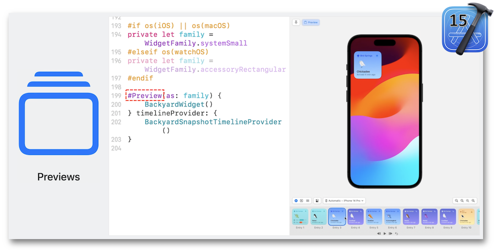
Navigating #
The use of the new Xcode 15 bookmarks navigator via the source control navigator streamlines the landmarks management and enhances the queries criteria.
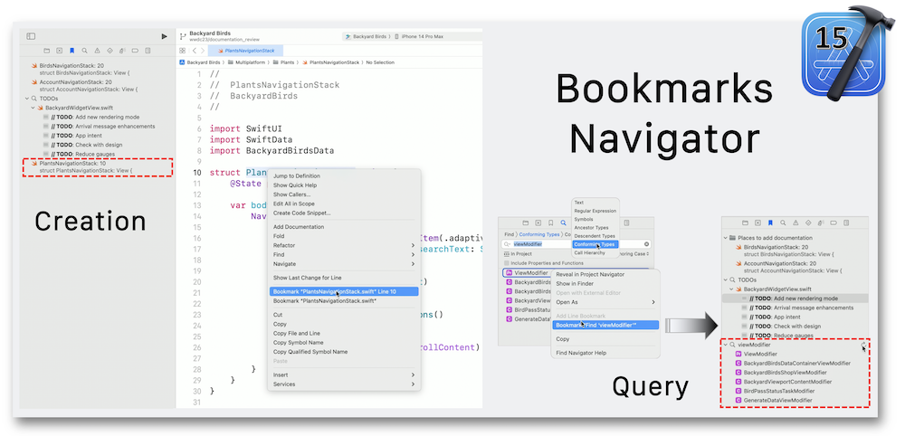
Sharing #
The changes navigator and the commit editor got a makeover in Xcode 15 by showing up all the modifications in a single display where changings are still possible before pushing the latest reviews.
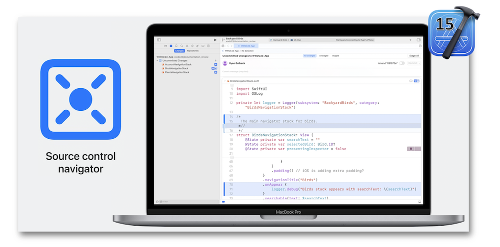
Testing #
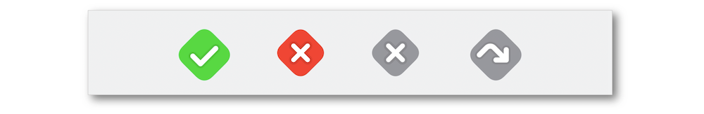
The test report has been revised for a better explanation of what needs to be done.
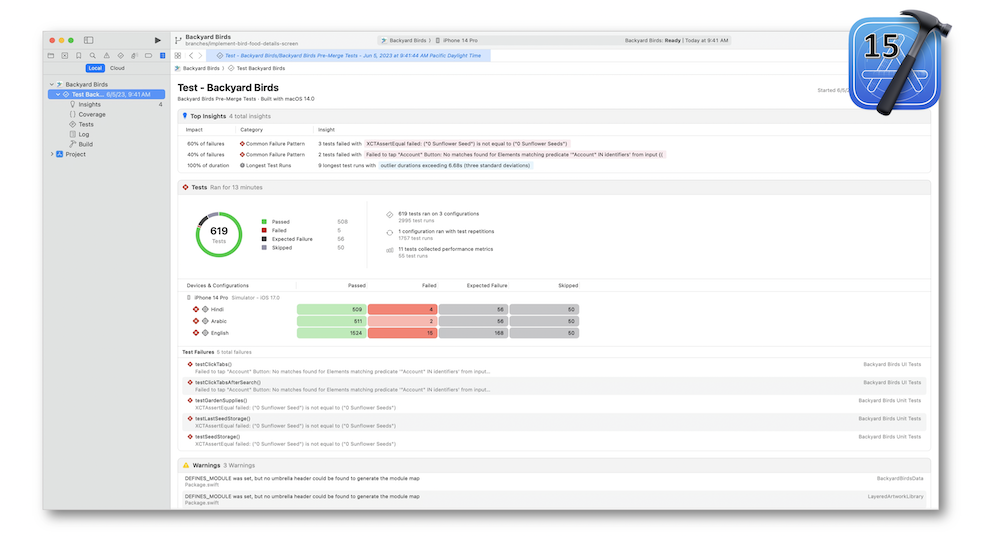
Insights are made for highlighting the common failure patterns and the longest tests runs.
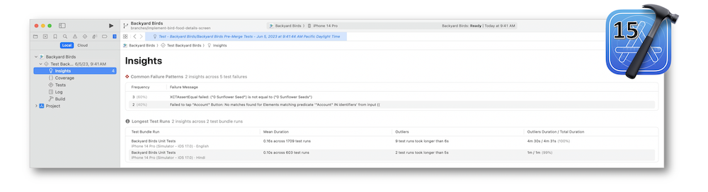
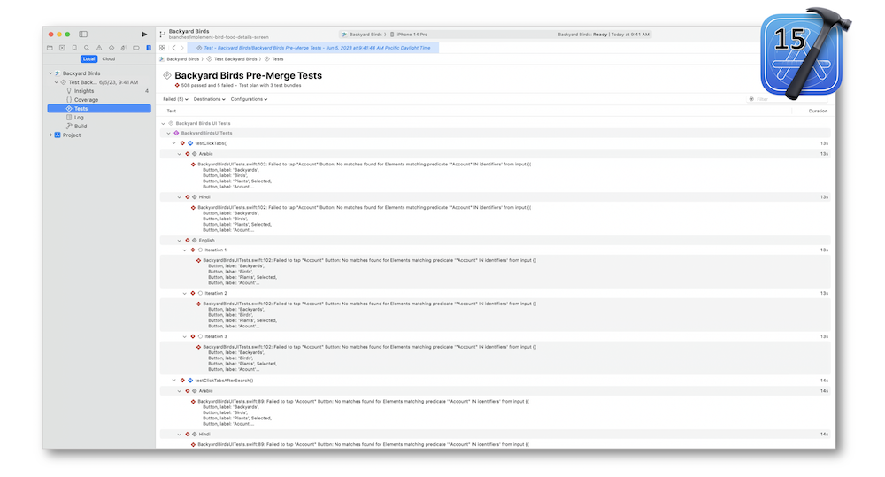
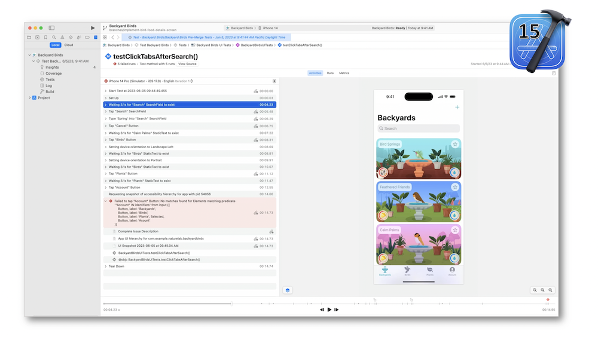
The interactivity of this new explorer comes with a video and a timeline that provide a smooth experience for debugging the UI tests.
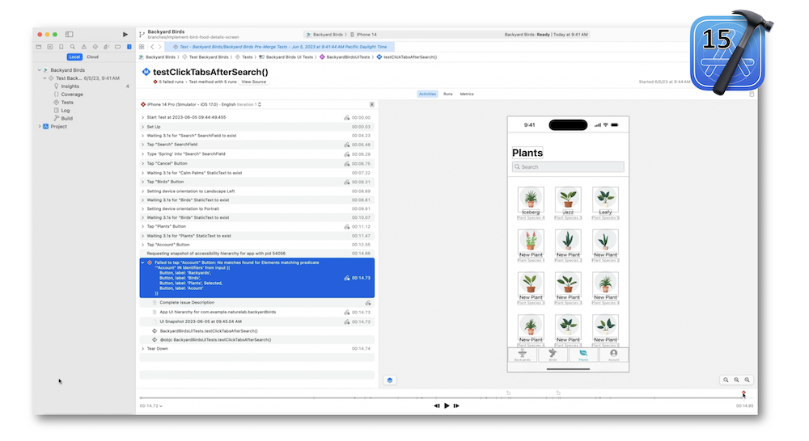
Debugging #
Xcode includes the OSLog framework for getting logged messages programmatically.
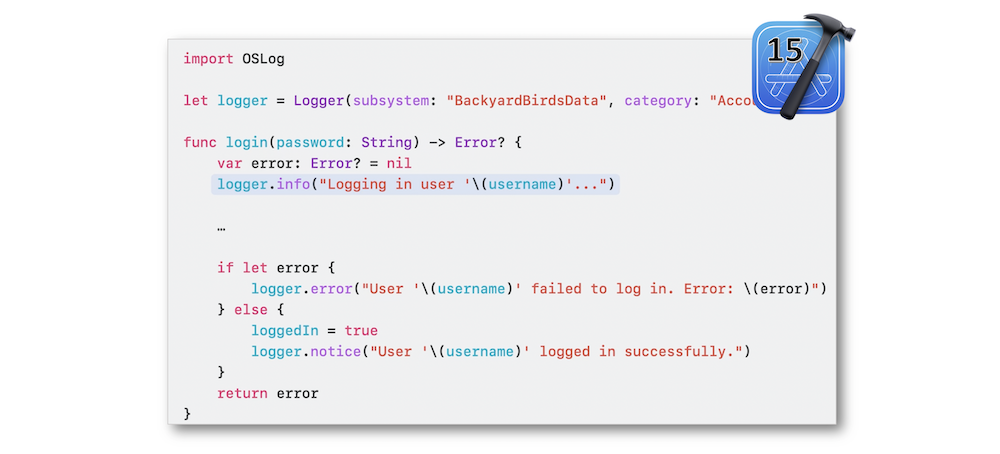
The console comes also with many logging features like severity and metadata consideration including an improved filter field.
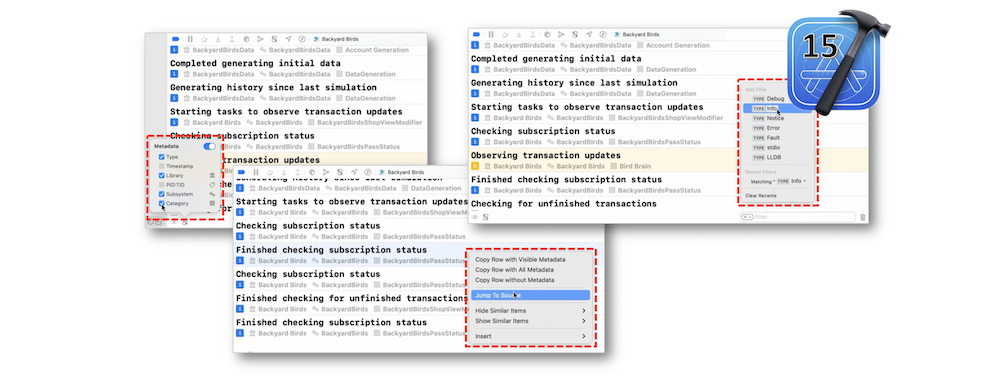
Distributing #
Test notes can be included right into the distributed build in order to provide specific information to the users for instance.
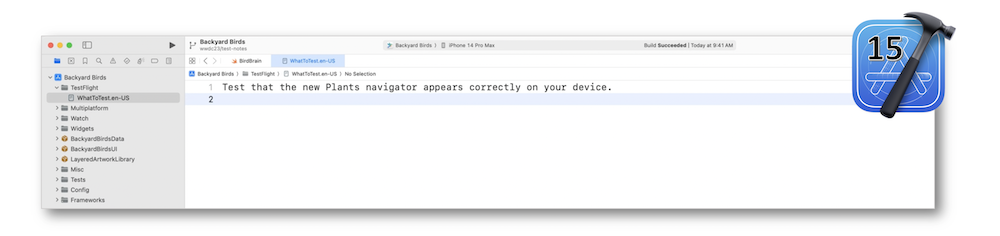
To prevent from releasing an app to the customers whereas it's supposed to be available to the team only, a new TestFlight internal testing option has been added to Xcode 15.
Moreover, desktop notifications about the build status can be sent while distributing through App Store Connect.
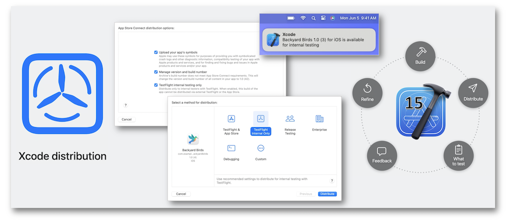
Mac apps are automatically scanned for malicious components thanks to the Apple notary service through Xcode Cloud.
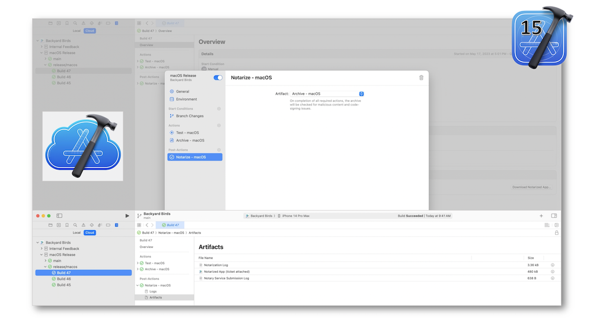
Xcode contains signature verification for XCFrameworks and a privacy manifest for the frameworks.
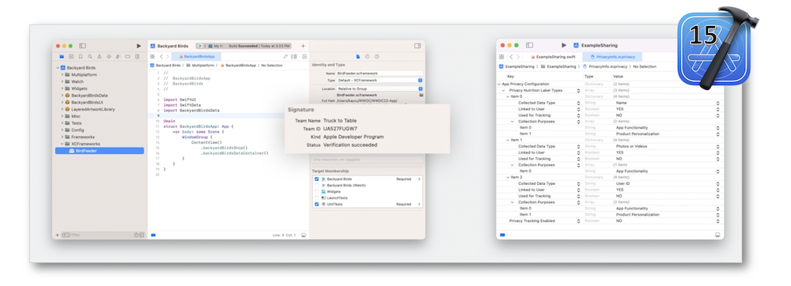
A detailed report gathering all the manifests that describe the ways sensitive data are used and protected can also be generated.
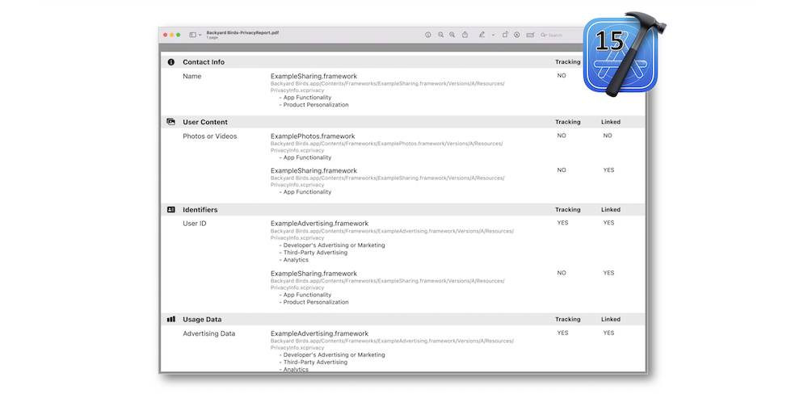